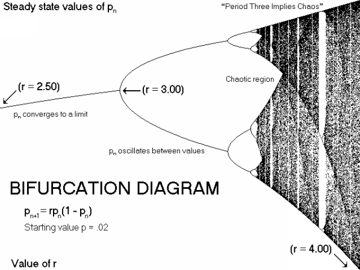

This logistic equation
xn+1 = a xn (1 - xn ) where 0 <= X0 <= 1 and 0 < a <= 4
has a maximum at Xm = 1/2 since g(1/2) = a/4.
g(X) = a xn (1 - xn ) ; g'(X) = a - 2aX and g''(X) = -2a < 0
We have two equilibrium points which are the followings: Xequil = 0 and Xequil = (a - 1)/a.
g(X) > X if 0 < X < Xequil and g(X) < X if Xequil < X < 1
g(X) is strictly monotone increasing
function on 0 < X < Xm and g(X) is strictly monotone
decreasing function on the interval
Xm < X < 1.
Also Xm < Xequil if 2 < a <= 4
So if 1 < a <= 2 from the following theorem called Cull's theorem which says:
Let A > 0 under some assumptions:
(i) g(X) is continuous on A with g(0) = 0 and g(X) > 0 if 0 < X < A
(ii) g(X) > X for 0 < X < Xequil and g(X) < X for Xequil < X < A
Then g(X) has a maximum Xm ( 0 < Xm <
Xequil )
and Xequil is a global attractor if and only if X < g(X)
for all X such that Xequil < X < Xm .
The function that helps us to study the global stability of this logistic difference function is called a Lyapunov function and it is equal to :
V(X) = (X - Xequil )2.
In conclusion we have the following
graph (where the value is replaced by r):
